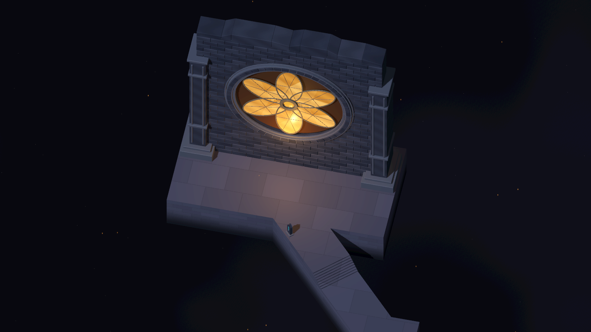
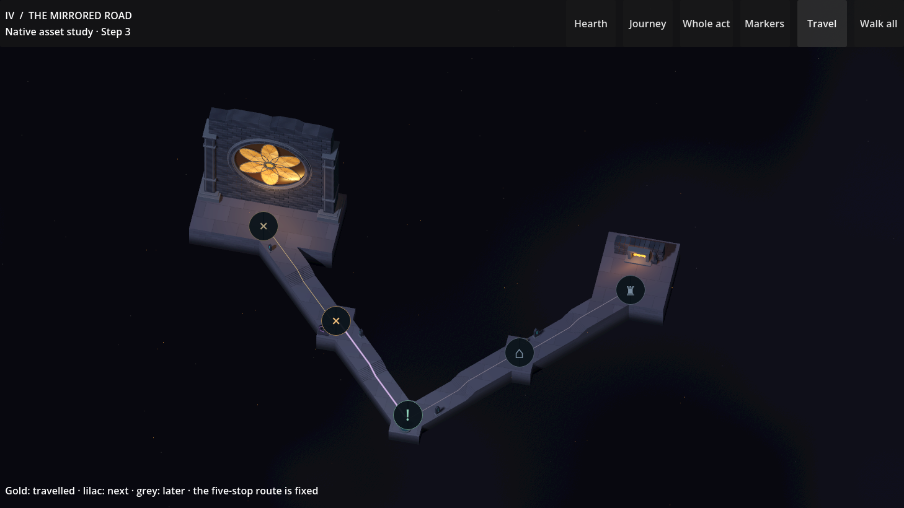
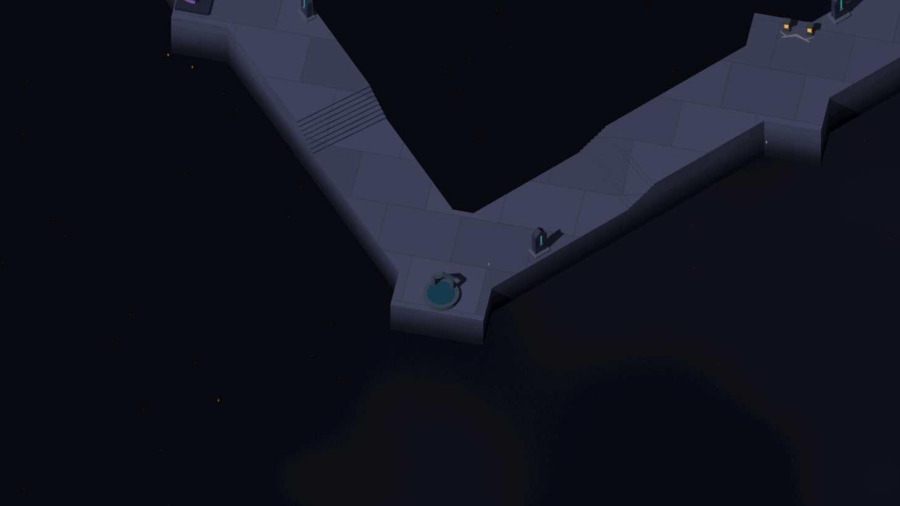
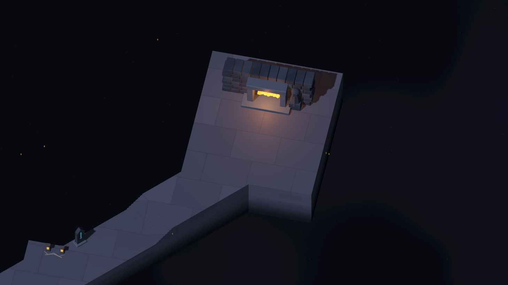
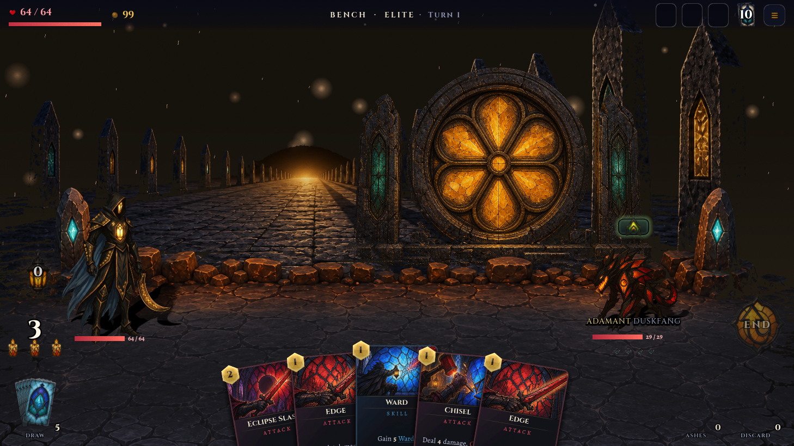
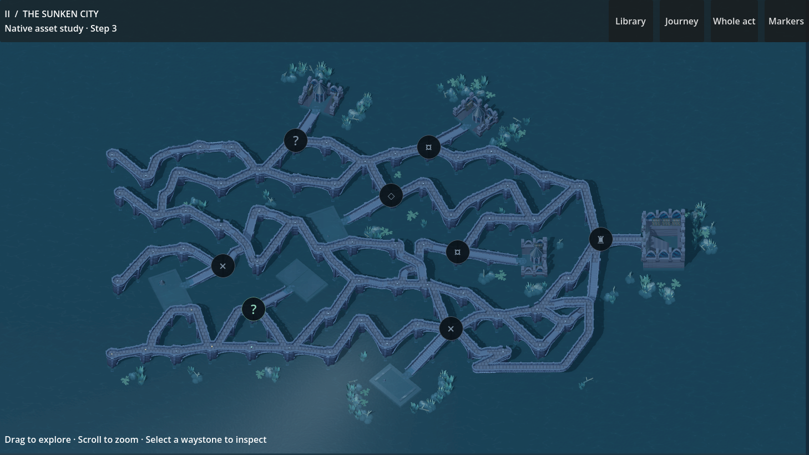

Act IV · Native chapter study · Step 3
The Mirrored Road
A procession through unbounded dusk. Amber glass at the threshold; a small hearth at the end. Five stops, connected by stone suspended in quiet cosmic haze.
Chapter review candidate · approval pending

The threshold: human-scale stelae beneath the final chapter’s monumental window.
Walk towards the last hearth
The film is an uncut native recording of the complete five-stop journey. Slow embers and faint drifting haze animate the surrounding space. The inspection journey leaves the saved run unchanged.
Near enough to travel. Far enough to plan.
Short stair flights descend towards the sunken memory, then rise towards the hearth. The route has no enclosing ground or outer wall. Overview guidance distinguishes travelled, available and later sections.

Wide overview. Captured in Godot; desktop windows at the stated proportions.
Memories carried on the way

Subordinate memories of earlier chapters sit on supported widenings of the path.
The destination stays intimate: a restrained fire, stone and silence.The same world in combat
The existing transparent battle ledge keeps its silhouette and teal stelae. A shared Act IV stone palette quietens the orange cracks across the fighting surface, allowing characters and cards to remain prominent.

Revised ground. Each before/after pair uses the same frozen combat scene.
Four chapters, one journey
The approved chapters retain their own settings: ash woodland, drowned architecture and an obsidian court. The last chapter removes the surrounding landscape while carrying their stone, glass and light into the void.
 Act I · Ash woodland · approved Step 3
Act I · Ash woodland · approved Step 3

Act II · Sunken city · approved Step 3
 Act III · Obsidian court · approved Step 3
Act IV · Mirrored road · awaiting chapter approval
Act III · Obsidian court · approved Step 3
Act IV · Mirrored road · awaiting chapter approval
Validation and reuse
Native geometry, input and route guidance were checked at all three proportions. The same five nodes and four routes are preserved across three seeds. Shared walking surfaces, stairs, route guidance and read-only travel retain the earlier chapters’ contracts.
The atmosphere uses one background shader and 42 instanced embers. Performance figures, gate results and known limits are recorded in the delivery report. Source and media receipt.